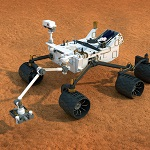
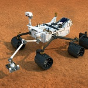
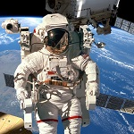
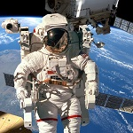

Space is interesting
The sun could hold one million Earths within it. To us this sounds like it is massive. However, it is not. The sun is only an average sized star. There are many more suns in the universe and a lot of them are much, much bigger than our sun.
A lot of people think that there has been life on Mars and that Mars used to be a planet much like our planet. Many think there was water on Mars and that its inhabitants migrated to another planet when it ran out. However, there is no proof of this at all and it could just be wishful thinking on our behalf.
It is amazing to think that our universe may not be the only one. Scientists use the term multiverse to describe this. It would be fun to think there could be a parallel universe – just like ours.

 

 
